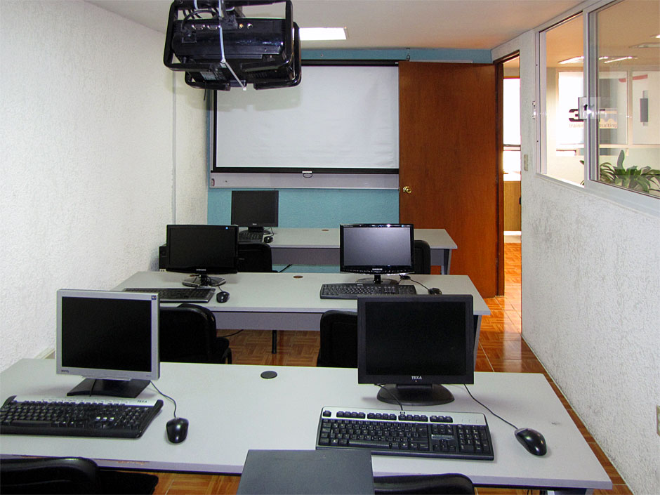
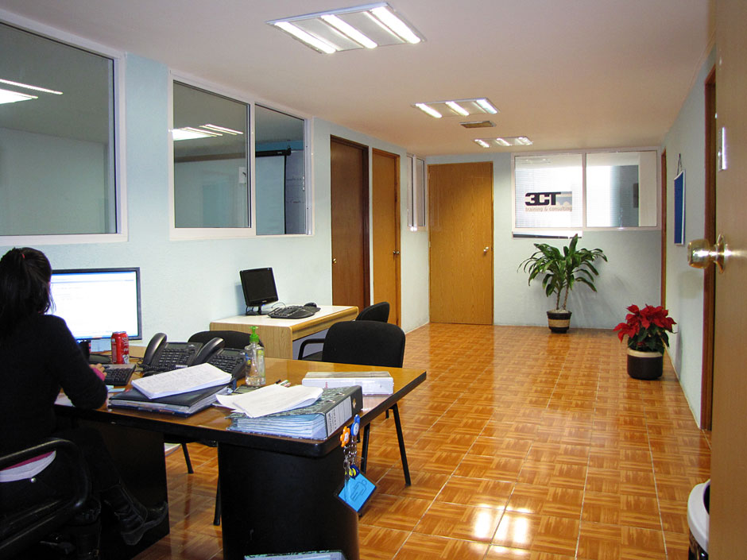

Teléfonos
Sucursal Roma:
5564 7993 y 5264 4719
Cursos de diseño web
Diplomados
Cursos de programación
Cursos de bases de datos
Diplomados:
-
Webmaster con Certificación de

- Diplomado de desarrollo de páginas web 2.0 con la paquetería Adobe CS5, XHTML, CSS, DHTML, Ajax, jQuery, XAMPP, PHP, MySQL y técnicas SEO.
 Conoce más
Conoce más
- Diplomado de desarrollo de páginas web 2.0 con la paquetería Adobe CS5, XHTML, CSS, DHTML, Ajax, jQuery, XAMPP, PHP, MySQL y técnicas SEO.
-
Informatica para la oficina
- Aprende el uso correcto de las aplicaciones más usadas en la oficina: Windows, Internet, Word y Excel Conoce más
- Aprende el uso correcto de las aplicaciones más usadas en la oficina: Windows, Internet, Word y Excel
-
Web 2.0 "Sólo código"
- El objetivo principal del diplomado es mostrar cada una de las tecnologías involucradas en el desarrollo de aplicaciones para la Internet sin el uso de herramientas de diseño, es decir, "sólo código": PHP, JavaScript, AJAX, Publicación Web Conoce más
- El objetivo principal del diplomado es mostrar cada una de las tecnologías involucradas en el desarrollo de aplicaciones para la Internet sin el uso de herramientas de diseño, es decir, "sólo código": PHP, JavaScript, AJAX, Publicación Web
Todos los cursos | Contacto | Inicio 5264 4719
Cursos de computación (Instalaciones)
Si lo que buscas es una escuela de computación donde tomar clases de programación o cursos de bases de datos; si quieres aprender diseño gráfico digital para poder hacer edición de imágenes, o deseas aprender a diseñar sitios web; 3CT es la mejor escuela de computación y diseño web en México DF.
En 3CT hay cursos de computación, nuestras instalaciones las puedes ver abajo, aquí se ofrecen cursos de Dreamweaver o Illustrator y toda la paquetería de Adobe, así como clases de programación en los cursos de PHP, Java o MySQL, .NET o SQL Server.
Además, en 3CT ofrecemos alternativas de capacitación en tecnologías de la información con clases en grupo o especializadas para empresas y profesionales con necesidades específicas. Pensando en una preparación integral, nuestros cursos de Java, las clases de bases de datos y la capacitación en diseño gráfico son especialidades bien organizadas y estructuradas para que quienes están buscando una escuela de computación o de diseño web puedan formase después de varios cursos especializados.
Instalaciones del plantel Roma

Una de las ventajas que ofrecemos son nuestros horarios: las clases de computación se pueden tomar en las mañanas muy temprano o en la noche; de la misma manera, quien está buscando clases de capacitación para el uso avanzado en la computadora aquí encontrará cursos de diseño gráfico, bases de datos y computación los sábados y hasta el domingo.
En la escuela de computación y diseño web de 3CT, damos nuestras clases de programación, bases de datos y diseño con un conocimiento teórico bien cimentado y muchas horas de práctica. Este es uno de nuestros laboratorios en el que se realizan las prácticas de capacitación en temas de tecnología; tiene computadoras con todos los recursos de software, Internet de alta velocidad, etc. Si te interesan cursos con clases accesibles y dinámicas, la capacitación en 3CT es tu mejor opción.
Recepción del Plantel Roma

Recepción e informes al alumno. El servicio de atención sobre los cursos de programación, bases de datos o diseño en nuestra escuela de computación y diseño web es en el horario de lunes a viernes de 9 a 21 horas. Además, todos los trámites sobre los horarios de los cursos, lo necesario para las clases y los temarios que usamos para la capacitación puedes obtenerlos aquí mismo.
Laboratorio 9 del Plantel Roma
Salón para las clases de diseño gráfico. Nuestros cursos de la paquetería Adobe son impartidos de tal manera que cada uno de los temas de las clases son probadas al momento. Con las últimas versiones del software y la supervisión y asesoría constante de nuestros instructores las clases de diseño gráfico serán fáciles de asimilar y los conocimientos adquiridos en los cursos podrán ser usados de inmediato.
Derechos reservados 3CT © 2011